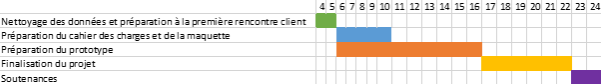
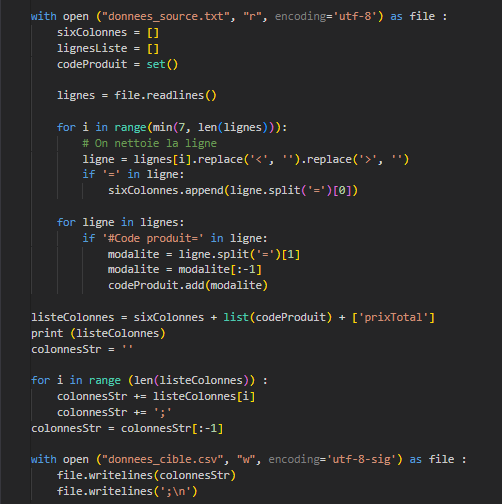
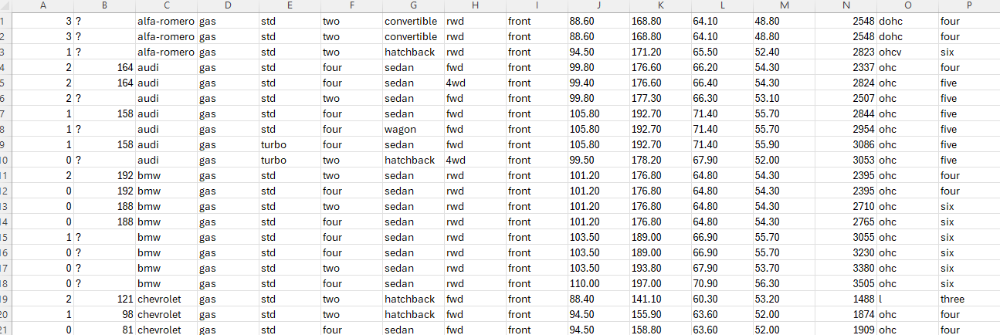
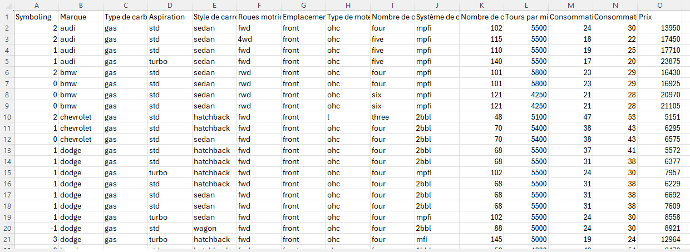
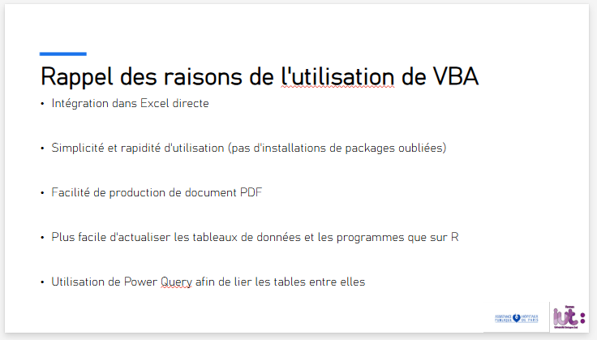

Compétence traiter
Traiter des données à des fins décisionnelles
AC11.01 : Correctement interpréter et prendre en compte le besoin du commanditaire ou du client
Lors de la SAE-206, j'ai eu pour tâche de créer une fiche synthèse pour le projet ComPaRe de l'AP-HP. Il m'a fallu bien comprendre ce que cherchait le commanditaire (l'AP-HP).
J'ai réalisé cette fiche dans un groupe de cinq, et pour bien prendre en compte leur besoin, nous avons réalisé un cahier des charges afin de mettre au clair ce que le commanditaire demandait.
Nous nous sommes posés la question sur le produit que nous devions rendre, à qui il allait servir, qui exactement faisait la demande, et comment les utilisateurs allaient s'en servir.
Notre cahier des charges était séparé en quatre parties (hors accord de confidentialité). L'une était consacrée au contexte (qui détaille que ce j'ai expliqué juste avant), la deuxième était consacrée aux spécificités fonctionnelles de la fiche,
c'est-à-dire que nous devions décrire ce qu'elle allait apporter. La troisième partie était dédiée aux spécifités techniques, nous avons donc décrit comment nous allions subvenir à leur besoin. Par quel logiciel,
format d'export, etc. Enfin, la dernière partie affichait notre organisation, nous avons produit un diagramme de Gantt afin de savoir quand nous allions procéder à chaque étape du projet.

Premier diagramme de Gantt
AC11.03 : Connaitre la syntaxe des langages et savoir l'utiliser
En décembre 2024, lors de la SAE-102, il m'a été requis de programmer du code dans le langage Python. Celle-ci consistait à traiter des données dans des fichiers CSV et TXT.
Mais également, pendant la SAE-206, il m'a fallu programmer beaucoup de code en VBA. Travaillant avec l'AP-HP sur le projet ComPaRe, je ne peux pas partager de ligne de codes, mais
il y a une syntaxe à respecter pour être sûr que le programme fonctionne bien. Celui-ci nous a permis de créer la fiche synthèse que le commanditaire demandait.
Voici un programme provenant de la SAE :

Un des programmes de la SAE-102
AC11.04 : Mesurer l'importance de la structure des données et savoir l'utiliser
Egalement lors de la SAE-206, nous avons reçu plusieurs fichiers de données d'extension CSV, contenant les réponses à des questionnaires. C'est sur ces fichiers que nous avons travaillé.
Il nous a fallu bien comprendre comment les données étaient structurées. Chaque fichier CSV correspondait à un questionnaire, avec en colonne la réponse à une question, et en ligne, l'identifiant
du patient / répondant.
Cependant, les fichiers CSV étant assez limités dans notre projet, nous avons décidé de tout convertir en fichier xlsm, afin de pouvoir ajouter des macros dans les fichiers. Cela prouve que nous
maitrisons la structure de données dans laquelle nous avons travaillé.
AC11.05 : Comprendre les structures algorithmiques de base et leur contexte d'usage
J'ai eu l'occasion de mettre en pratique la compétence AC11.05 lors de la SAE-203, où j'ai utilisé une des structures algorithmiques de base. Dans cette SAE, moi ainsi que mon binôme avons récupéré
un fichier CSV sur Internet afin d'en réaliser une étude statistique descriptive. Nous avons eu l'occasion de récupérer un fichier CSV ayant pour objet les modèles d'automobiles puis de le nettoyer
et n'y laisser uniquement ce qui allait nous intéresser pour l'étude statistique.
Pour comparaison, voici un extrait du fichier original, suivi d'un extrait du fichier modifié :

Extrait du fichier Excel original

Extrait du fichier Excel modifié
AC11.06 : Prendre conscience de l'intérêt de la programmation
Lors de la SAE-206, nous avons dû réaliser des programmes en VBA, comme précisé plus tôt. D'un côté où cette décision a été assez instinctive pour mon groupe, il est fort important de préciser
que l'AP-HP n'avait pas compris que nous allions créer du code VBA lorsque nous leurs avions dit que nous allions travailler sur Excel. En effet, il y a eu malentendu et ils ont pensé que nous allions
faire de simples formules Excel pour calculer les scores des patients. Bien que cela nous ait été utile pour pouvoir programmer avec l'esprit clair, ce n'est pas ce qu'ils voulaient.
Lors d'une réunion avec le commanditaire, nous leurs avons bien expliqué que nous avions conscience de l'intérêt de la programmation plutôt que de réaliser des formules sur Excel manuellement.
Nous leurs avons ainsi expliqué notre choix : VBA. Déjà présent dans Excel, extrêmement simple de générer du PDF, mais aussi possibilité de directement créer des boutons dans le fichier Excel
afin de lancer notre programme. Ainsi, ils ont compris que nous avions conscience de l'intérêt de programmer : il n'y avait pas moyen de faire autrement.

Diapositive présenté à l'AP-HP expliquant notre choix pour VBA